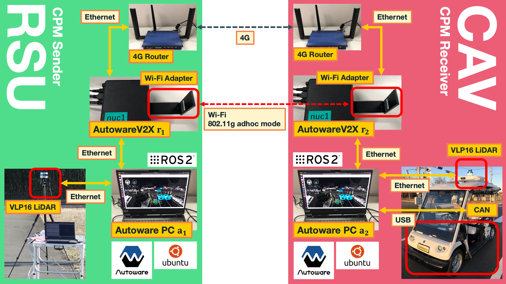

Running AutowareV2X on Actual Devices#
After testing functions in the simulator, it is time to install AutowareV2X on actual hardware.
The setup that we consider is shown in the figure below. The Roadside Unit (RSU) acts as the CPM sender, and the CAV (Connected Autonomous Vehicle) is the CPM receiver. In terms of the software that comprises the RSU and CAV, they are both very similar.
Take a look at the right hand side that shows the setup for the RSU. The sensing component for the RSU is a LiDAR (VLP-16) mounted on top of a tripod. The point cloud from the LiDAR is inputed into the Autoware PC with a normal Ethernet interface. The Autoware PC used here is an off-the-shelf gaming laptop. AutowareV2X is run on a separate machine, the Intel NUC, and it is connected to the Autoware PC via an Ethernet cable as well. All network interfaces, including the Wi-Fi module and 4G router in this case, is connected to the AutowareV2X PC. For the sake of simplicity, we will only focus on one Wi-Fi interface for this documentation.
The set up for the vehicle is very similiar. The only difference is that the Autoware PC is now connected to the sensors and actuators of the vehicle.
So, the bare minimum for a CPM sender and receiver setup using AutowareV2X is TWO sets of the following:
- Autoware PC (Running the latest Autoware.universe)
- AutowareV2X PC (Running the latest AutowareV2X)
- LiDAR sensor (Autoware compatible, only necessary at the CPM Sender)
In this tutorial, we will explain how to set this up. Depending on the number of CPM senders or receivers you need, you will need to make more copies of the same setup.

Equipments#
The details for the equipment used in the setup is shown in the tables below.
Hardware for the RSU#
| Purpose | Device | Specification |
|---|---|---|
| AutowareV2X PC | Intel NUC, Model: 11Pro | OS: Ubuntu 20.04, ROS: Galactic, Software: AutowareV2X |
| Autoware PC | Gtune PC, Model: H5 | OS: Ubuntu 20.04, ROS: Galactic, Software: Autoware.universe |
| Wi-Fi Network Interface | Netgear Wi-Fi Dongle, Model: A6210 | Dual-band: 802.11b/g/n (2.4GHz), 802.11a/n/ac (5GHz) |
| 4G/LTE Network Interface | IDY IoM 5G Gateway, Model: iR730B | Bands: 3G, 4G, 5G, nano PSIM, 4x high-performance active antennas |
| Sensor | VLP16 3D LiDAR | Range: 100 m, Accuracy: +/- 3 cm, Rotation rate: 5-20 Hz, 16 channels |
Hardware for the CAV#
| Purpose | Device | Specification |
|---|---|---|
| AutowareV2X PC | Intel NUC, Model: 11Pro | OS: Ubuntu 20.04, ROS: Galactic, Software: AutowareV2X |
| Autoware PC | Gigabyte PC, Model: AERO-15 | OS: Ubuntu 20.04, ROS: Galactic, Software: Autoware.universe |
| Wi-Fi Network Interface | Netgear Wi-Fi Dongle, Model: A6210 | Dual-band: 802.11b/g/n (2.4GHz), 802.11a/n/ac (5GHz) |
| 4G/LTE Network Interface | IDY IoM 5G Gateway, Model: iR730B | Bands: 3G, 4G, 5G, nano PSIM, 4x high-performance active antennas |
| Vehicle | Model: Yamaha G30Es-Li | Speed: less than 20 km/h, Sensor: VLP16 3D LiDAR (Rooftop) |
Autoware PC#
-
For the Autoware PC, you can follow the normal installation procedures for Autoware.universe. A PC with a discrete GPU is recommended for better performance with sensor processing and object detection.
-
Attach sensors to the Autoware PC (such as LiDARs) and make sure that you can start and run Autoware.
-
Confirm that the following two ROS2 topics are being published:
/perception/object_recognition/objects/tf
AutowareV2X PC#
Install AutowareV2X#
-
Install Ubuntu 20.04 or 22.04 on a new PC.
-
Follow the Source Installation Guide for AutowareV2X to set up AutowareV2X. Do note that here, you will be installing Autoware again onto this PC, alongside AutowareV2X. But in practice, we will not be using the Autoware here and will rather use the Autoware on the Autoware PC.
ROS2 Connectivity of Autoware PC and AutowareV2X PC#
-
Connect the Autoware PC and AutowareV2X PC with an Ethernet cable (preferably Cat5e or above). Setup local IP addresses and IP routing on both the PCs so that they have IP reachability to each other. Confirm this by pinging each PC from the other.
-
Once this is setup, when you run Autoware on the Autoware PC, you should see all the ROS2 topics on the AutowareV2X PC as well. Confirm this by running
ros2 topic liston the AutowareV2X PC after running Autoware or the Planning Simulator on the Autoware PC.
Note
At this point, it may be wise to create at least two sets of the Autoware PC and AutowareV2X PC setup. One for the sender and the other for the receiver.
Wi-Fi interface for CPM transmission#
-
Attach a network interface to the AutowareV2X PC. You can use the default Wi-Fi interface or attach an USB dongle if necessary.
-
Create an Wi-Fi adhoc network to send the CPMs in. Sample commands are as below. Substitute the name of the network interface, and remember to change the IP address of the sender and receiver.
sudo systemctl stop network-manager
sudo ifconfig wlx94a67e5d6f4d down
sudo iwconfig wlx94a67e5d6f4d mode ad-hoc
sudo iwconfig wlx94a67e5d6f4d essid CITS-EXP
sudo ip addr add 10.0.0.2/24 dev wlx94a67e5d6f4d
sudo ifconfig wlx94a67e5d6f4d up
- Once the adhoc network is up, you should be able to ping from the sender AutowareV2X PC to the receiver AutowareV2X PC if they are nearby.
The iwconfig command can be used to check the adhoc network connection.
# Sender AutowareV2X
wlx94a67e5d6f4d IEEE 802.11 ESSID:"CITS-EXP"
Mode:Ad-Hoc Frequency:2.412 GHz Cell: 0E:06:A2:BE:F5:6C
Tx-Power=18 dBm
Retry short limit:7 RTS thr:off Fragment thr:off
Power Management:off
# Receiver AutowareV2X
wlx94a67e5d6f47 IEEE 802.11 ESSID:"CITS-EXP"
Mode:Ad-Hoc Frequency:2.412 GHz Cell: 0E:06:A2:BE:F5:6C
Tx-Power=18 dBm
Retry short limit:7 RTS thr:off Fragment thr:off
Power Management:off
Run Autoware and AutowareV2X#
-
Run Autoware on the Autoware PC.
-
At this point, if you run AutowareV2X as explained in the Run AutowareV2X Tutorial, you should see that AutowareV2X will generate CPMs from the object information it receives from the Autoware PC and send it out the network interface.
autoware_1in the linked tutorial is the CPM Sender AutowareV2X PC, andautoware_2is the CPM Receiver AutowareV2X PC in this case. -
Check that the CPMs can be received on the receiver side.